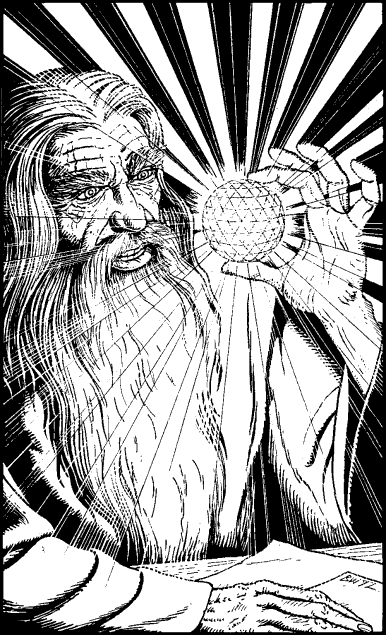

100
From a secret drawer beneath the stone table, Gwynian brings forth a golden crystal the size of an apple. Its multi-faceted surface radiates a myriad of tiny beams which shimmer and sparkle with the fiery energy that is locked within its core.
‘This is a Sun-crystal, Grand Master,’ he says, placing the object into the palm of your hand. Its surface feels pleasantly warm, inviting your touch. ‘If you are to save your brethren, you must close the Shadow Gate for good. This crystal can achieve this aim. It contains power sufficient to destroy the Shadow Gate and prevent its return.’

You look down at the glowing crystal with fearful respect. Gwynian notes your concern and smiles.
‘You need not fear the crystal’s power for it cannot cause harm in our world. Only if it is cast into another plane of existence will its powers be released. Grand Master, you must cast it into the Shadow Gate that Naar has created.’
‘So this is how I can save my brethren,’ you whisper, as you peer into the glittering head of the crystal.
‘Just so,’ replies Gwynian. ‘Just so.’
‘Then I must away at once,’ you say, placing the Sun-crystal into the pocket of your tunic. ‘Now that I have the weapon I need to save my people, I can stay not a moment longer; I must leave for Casiorn at once.’
‘Yes,’ says Gwynian, still smiling, ‘I know of your plans, and I have made provision for you to travel to the City of Merchants more swiftly. Come, follow me, and all will be revealed.’
Record the Sun-crystal on your Action Chart as a Special Item. You must discard another item in its favour if you already possess the maximum number permissible.